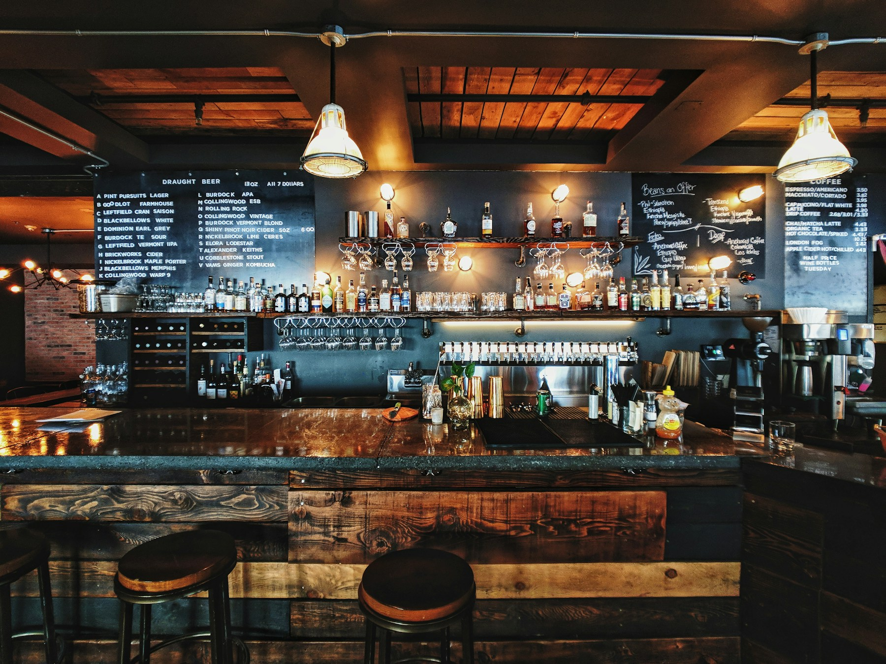

El aperitivo
Una gilda, un vermut y esa maravillosa sensación de que el día acaba de empezar.
PARA IR ABRIENDO BOCATaberna Variantes
La primera copa. El último bocado.
Y todo lo bueno que pasa entre medias.


Variantes nace de una idea sencilla: las mejores cosas suceden alrededor de una mesa. Un plato para compartir, una copa bien servida y una conversación que no necesita mirar el reloj.
Un homenaje a la taberna de siempre, con una mirada de hoy. Al producto, al oficio y al placer de hacer de cualquier día una pequeña celebración.
A LA MESA
EL SABOR DE VOLVER EL PRODUCTO MANDA. EL RESTO, ACOMPAÑA.
EL PRODUCTO MANDA. EL RESTO, ACOMPAÑA.Para abrir boca.
Sabores que reconoces. Combinaciones que sorprenden. Una cocina pensada para pedir al centro, probar de todo y dejar que la mesa decida el ritmo.
PUERTAS ADENTRO
Rincones para dos. Mesas para muchos.
Un lugar para sentirte parte de algo.
PEQUEÑOS GRANDES MOMENTOS
NO ES LA HORA. ES EL MOMENTO.Hay un Variantes para cada momento.
Elige el tuyo. O quédate a todos.
Una gilda, un vermut y esa maravillosa sensación de que el día acaba de empezar.
PARA IR ABRIENDO BOCAPlatos al centro, pan para mojar y una segunda copa que llega sin que nadie la pida.
PARA COMPARTIRLO TODOEl café se termina. La charla, no. A veces, el mejor plato es el rato de después.
PARA QUEDARSE UN POCO MÁSDESDE NUESTRA TABERNA
Platos, rincones y momentos.
Una selección de nuestro Instagram.
Las publicaciones completas, siempre en nuestro perfil.
SEGUIR A VARIANTESLAS MEJORES MESAS TIENEN ALGO EN COMÚN.
Nosotros ponemos la mesa.
Tú trae las ganas de quedarte.